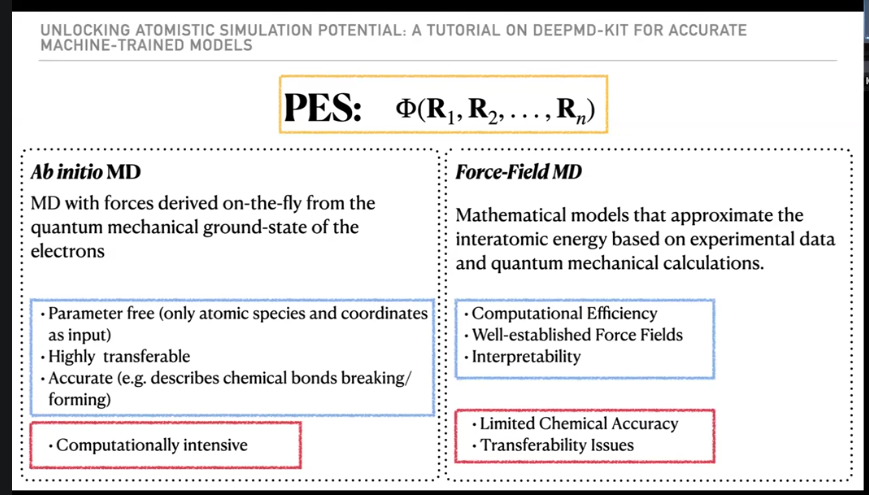
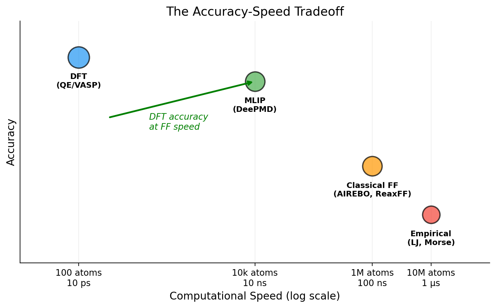

Ch 1: Why Machine-Learned Potentials?#
You already know the answer. You just haven’t said it out loud.
You’ve submitted a QE job for a 100-atom cell. You’ve watched it burn through 128 cores for 30 minutes to finish one SCF cycle. One. And you need 20,000 of those for a 10 ps AIMD trajectory at half a femtosecond per step. That’s roughly 10,000 CPU-hours for a single trajectory at a single temperature.
Now scale it up. Ten temperatures. A surface system with 500 atoms. Statistical averaging over multiple initial conditions.
You don’t have that compute budget. Nobody does. That’s the honest starting point for everything in this tutorial.
{kind=link}

Fig. 1 The two traditional approaches to modeling the potential energy surface \(\Phi(\mathbf{R}_1, \mathbf{R}_2, \ldots, \mathbf{R}_n)\). Ab initio MD derives forces from quantum mechanics (accurate, transferable, but expensive). Force-field MD approximates the PES with analytical functions (fast, but limited accuracy and transferability). MLIPs bridge this gap. Figure from DeePMD-kit tutorial.#
The Accuracy-Speed Tradeoff#
Every atomistic simulation method stakes a claim on the same axis. Accuracy at one end. Speed at the other. Pick one. That was the deal for decades.
Density Functional Theory (DFT): You trust it (for the functional you chose, anyway). Real quantum-mechanical energies and forces, derived from first principles. But the scaling is \(O(N^3)\) with electron count. 100 atoms? Routine. 1,000 atoms? A career-defining calculation. 10,000 atoms for production MD? Not happening.
Classical Force Fields (AIREBO, ReaxFF, Tersoff, the usual suspects): Fast. Millions of atoms for nanoseconds. The catch? The functional forms are frozen. Harmonic bonds. Lennard-Jones pairs. Predefined angle potentials. Someone sat down, thought hard about the physics, and wrote a mathematical expression. That expression works beautifully for the system it was designed for. For everything else? You’re on your own. Charge transfer, bond breaking, any interaction the designer didn’t anticipate: invisible. And for a new material or unusual thermodynamic condition, good luck finding parameters that actually work.
So there’s a gap. DFT accuracy on one side. Classical speed on the other. Nothing in between.
Machine-learned interatomic potentials (MLIPs) live in that gap. And that changes everything.
Key Insight
An MLIP is a function (typically a neural network) trained on DFT data to predict the potential energy and atomic forces of a system. Once trained, it runs 1,000 to 10,000 times faster than DFT while reproducing DFT accuracy to within a few meV/atom in energy and roughly 50 meV/Angstrom in forces.
The tradeoff: you need good training data (DFT calculations) upfront. The model is only as good as the data it learned from. Think of it as a student. Bad curriculum, bad student. Biased curriculum, biased student.
Here’s the picture in numbers. Study this table. It tells you exactly why this tutorial exists.
Method |
Accuracy |
Speed (atoms) |
Speed (time) |
|---|---|---|---|
DFT (QE/VASP) |
Reference |
~100 |
~10 ps |
MLIP (DeePMD) |
Near-DFT |
~10,000-100,000 |
~10 ns |
Classical FF |
System-dependent |
~1,000,000 |
~100 ns |
Look at the MLIP row. Near-DFT accuracy. 3 to 4 orders of magnitude faster. That 10,000 CPU-hour AIMD trajectory? An MLIP does it in minutes on a single GPU.
Are you seeing this? This isn’t incremental. This is a different game entirely.
Why Not Just Use a Better Force Field?#
Fair question. If you want bigger, faster simulations, why not improve the classical force field? Why drag neural networks into this?
Because classical force fields have a problem that no amount of fitting can fix: they assume a functional form.
Here’s what that means. Take AIREBO for carbon. It says “the interaction between two carbon atoms depends on bond order, which depends on these specific angular functions, with these specific cutoffs.” A human thought very carefully about carbon bonding and wrote that mathematical expression. It works beautifully for graphite, diamond, carbon nanotubes. Systems it was designed for.
Now put hydrogen on a graphene surface where C-H physisorption matters. Or push the system into a regime where van der Waals forces dominate the physics. AIREBO might not have the right terms. You’d need to re-parameterize, or switch to a different potential, or accept the inaccuracy and hope reviewers don’t notice.
An MLIP doesn’t assume anything about the functional form. The neural network learns the potential energy surface directly from data. If there’s a subtle many-body interaction that matters, the network can capture it. No human needs to anticipate it. No one needs to invent a special mathematical term for it.
The network just needs to see it in the training data.
Here’s what nobody tells you: both approaches fail outside their comfort zone. But the kind of failure is completely different.
Aspect |
Classical Force Field |
MLIP (DeePMD) |
|---|---|---|
Potential form |
Designed by a human |
Learned from DFT data |
Limited by |
Imagination of the designer |
Quality/diversity of training data |
New interaction needed |
Redesign the mathematical form |
Add more training data |
Bond breaking |
Only if explicitly parameterized |
Captured if in training data |
Transferability |
Poor outside fitted conditions |
Poor outside training distribution |
Read that last row again. Seriously. Both approaches break outside their domain. The MLIP isn’t magic. It can’t predict physics it hasn’t seen. But the MLIP’s failure mode is fixable. Need it to work at higher temperature? Generate DFT data at higher temperature and retrain. The classical FF’s failure requires redesigning the mathematical form from scratch. Starting over. A different kind of problem entirely.
One limit is a data problem. The other is a theory problem. Data problems are easier to solve.
Key Insight
The fundamental difference: classical force fields are designed, MLIPs are learned. A designed potential is limited by the imagination of the person who wrote the functional form. A learned potential is limited by the quality and diversity of its training data.
Both have limits. But the MLIP’s limit is fixable: add more data. The classical FF’s limit requires redesigning the mathematical form from scratch.
{kind=link}

Fig. 2 The accuracy-speed tradeoff. DFT is accurate but slow. Classical force fields are fast but limited. Machine learning potentials (MLIPs) aim for DFT-level accuracy at near-classical speed. Bubble size indicates typical system size each method can handle.#
Why DeePMD-kit Specifically?#
There are a lot of MLIP frameworks. GAP, SNAP, MTP, ACE, ANI, NequIP, MACE, Allegro, SchNet. New ones show up every few months. The field moves fast.
This tutorial uses DeePMD-kit. Not because it’s “the best” (that depends on your system and your tolerance for pain). Because the full ecosystem solves problems you don’t even know you have yet.
End-to-end: Raw atomic positions in, energy and forces out. No manual feature engineering. No basis set selection. No “choose your 47 symmetry functions and pray.” You hand it coordinates. It gives you a potential. That’s the whole interface.
Smooth and continuous: The descriptor (
se_e2_a) provides smooth energy surfaces. This matters more than it sounds. A discontinuous potential creates infinite forces at the cutoff boundary. Your simulation doesn’t crash. It just produces garbage. Silently.Size-extensive: Total energy scales linearly with atom count. Train on 72 atoms, run inference on 10,000. The model doesn’t care about system size because it never sees the total system. Each atom only sees its local neighborhood. This is the part that clicks.
dpgen integration: This is the killer feature. DeePMD-kit comes with dpgen, an automated active learning framework that systematically builds the training dataset. Without dpgen, you’re manually curating training data forever, guessing which configurations the model needs next. With dpgen, the model tells you what data it needs. The student raises its hand and says “I’m confused about this.” You just answer the question.
LAMMPS integration: The trained model plugs directly into LAMMPS as
pair_style deepmd. No custom code. All of LAMMPS’s analysis tools, thermostats, and barostats work out of the box. If you already know LAMMPS, you already know how to use this.Mature and tested: Hundreds of published papers. Active development team. Dense documentation (we’ll translate the dense parts).
The Core Idea#
Here’s the entire pipeline in five steps. You’ll understand every detail by Ch 4, but the outline is dead simple.
Collect DFT data: Run DFT calculations (AIMD trajectories, perturbed structures, whatever you have) to get energies and forces for a set of atomic configurations. This is the curriculum.
Train a neural network: Feed those configurations to DeePMD-kit. It learns a mapping from atomic positions to energy. Forces come for free as the negative gradient of energy with respect to position. One architecture, two outputs.
Use the model in MD: Plug the trained model into LAMMPS. Run MD at DFT accuracy, 10,000 times faster. That’s the payoff. Right there.
Find where the model fails: Run the model in new conditions. Where it’s uncertain (model deviation; defined precisely in Ch 6), it needs more training data. One model doesn’t know what it doesn’t know. But four copies of the model, trained with different random seeds, do. When they disagree, that’s the signal. That’s the entire active learning idea in one sentence.
Label and retrain: Run DFT on those uncertain structures, add them to the training set, retrain. The model improves. The student learns from its mistakes.
Steps 4 and 5 repeat until the model handles everything you throw at it. That’s the dpgen loop. It’s the subject of Part III of this tutorial. Stay with me through the foundations first. They pay off.
What You’ll Build#
By the end of this tutorial, you’ll have:
Converted DFT output to DeePMD training format (Ch 3)
Trained your first neural network potential (Ch 4)
Run MD with that potential in LAMMPS (Ch 5)
Set up and run dpgen’s automated active learning loop (Ch 6-10)
Validated that your model actually works (Ch 11)
The tools are DeePMD-kit v3.1.2, dpdata 1.0.0, dpgen 0.13.2, LAMMPS (29 Aug 2024), all inside an Apptainer container.
Wait, what’s Apptainer?#
Short version: Docker for HPC. You know the nightmare. Installing DeePMD-kit means matching CUDA versions, TensorFlow versions, compiler versions, and performing a ritual sacrifice to the dependency gods. Apptainer (formerly Singularity) packages everything into a single .sif file. One file. All the software, all the libraries, all the correct versions. Copy it to your cluster, run it. It works.
The beauty is that it doesn’t need root access. Your HPC admin doesn’t need to install anything. You don’t need to beg for a conda environment on a shared filesystem. You bring your .sif file and go. Apptainer comes pre-installed on most HPC clusters that run Linux (so, all of them).
I built the container for this tutorial so you can skip straight to the science. The .sif file is ~8 GB (too large to host), but the definition file is tiny. Download deepmd-dpgen.def and build it yourself:
$ apptainer build deepmd-dpgen.sif deepmd-dpgen.def
One command. It pulls the official DeePMD-kit Docker image and installs dpgen and dpdata on top. Ten minutes later you have everything this tutorial uses. If your cluster sits behind a proxy, add http_proxy and https_proxy to the %post section of the def file before building (same as you’d do for pip).
If you want to know more about bind mounts, GPU passthrough, and all the ways containers can silently fail on a cluster, there’s a full deep-dive in the Apptainer practical topic. For now, just know: if a command in this tutorial starts with apptainer exec, that’s running software from inside the container. Nothing magical. Just a portable install.
Curious about Apptainer itself? The GitHub repo has everything you need to get started.
Alright, enough theory. Let’s look at how the neural network actually works.